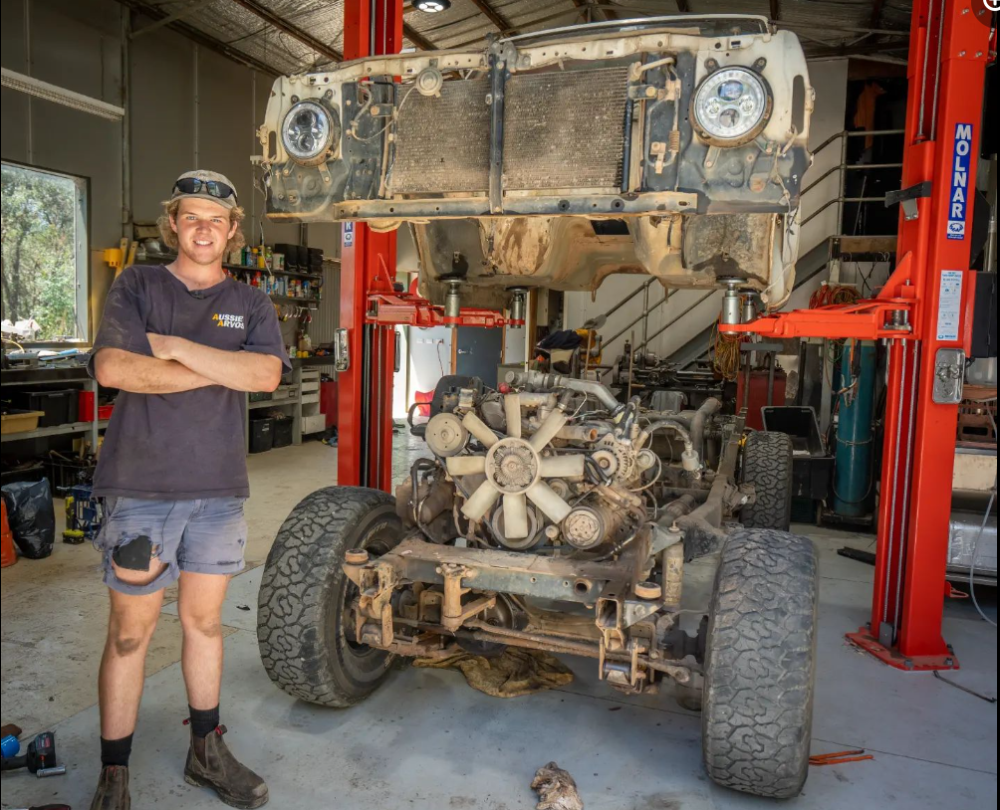
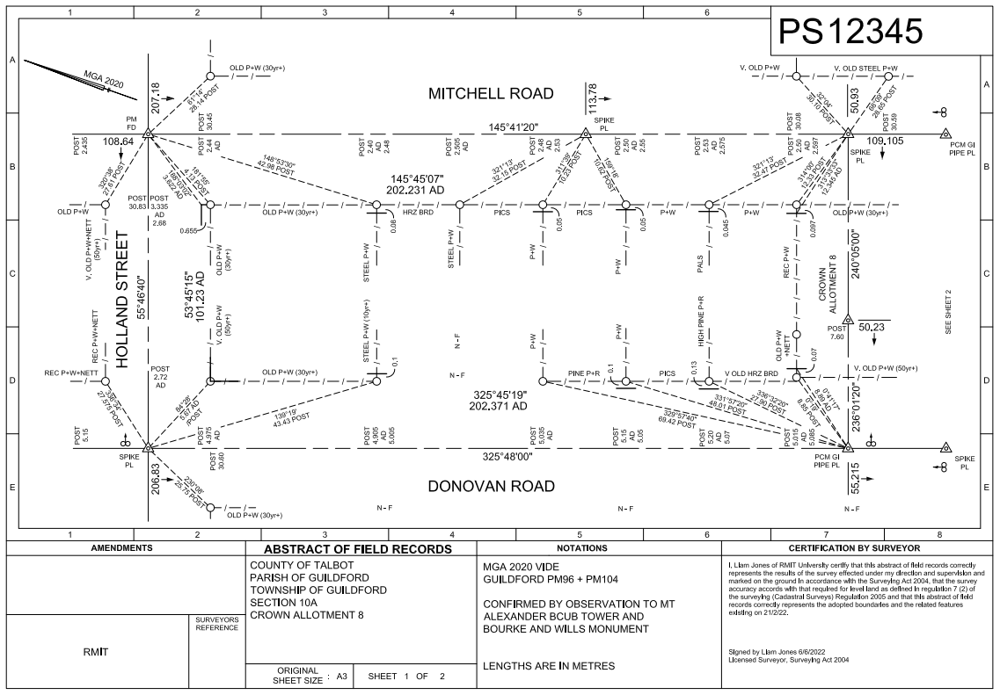
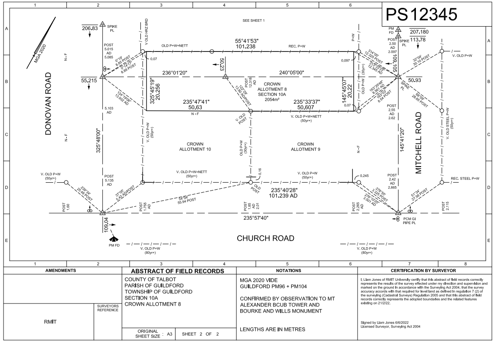
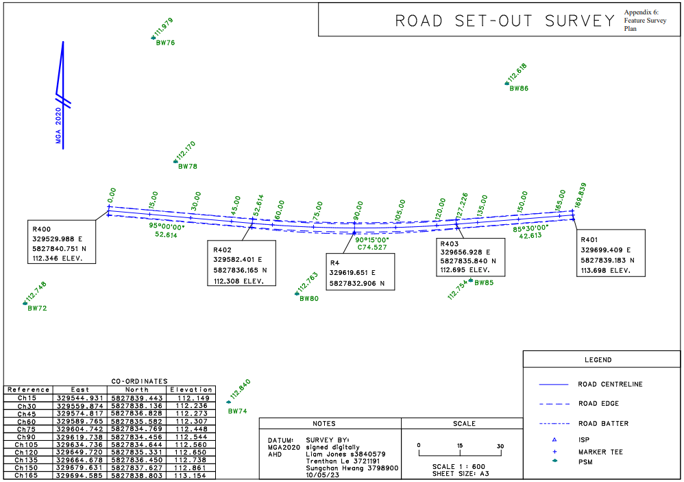
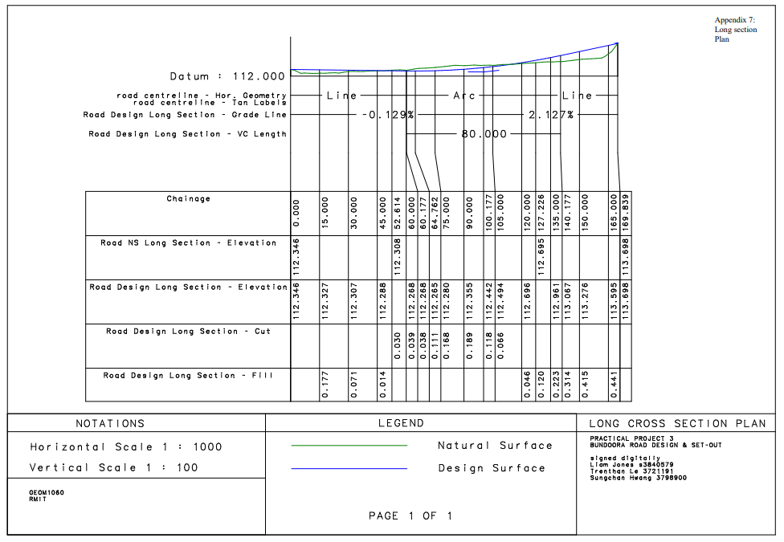
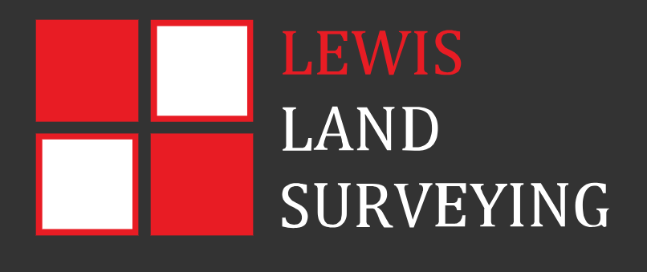

Geoportfolio
Liam Jones
About
This is my geoportfolio which was made for the subject Professional Practice (GEOMODO). The website contains information about what i have achieved in my
4 years studying at RMIT.
Hi, My Name is Liam Jones and as of March 2023, I am in my fourth and final year of the
Bachelor of Applied Science (Surveying) (Honours) course. My Surveying related interests is working with robotic total stations, collection and analysis of
spatial information, drafting survey plans and and being able to do so by getting out in the field. My current capstone research projects involes creating a
report about the use of Unmanned Survey Vessels (USV's) for hydrographic surveys. this is done via research of current scientific papers and by working with
a hydrographic survey company, Bintang Subsea who use their own USV to perform hydrpgraphic surveys.
My own personal hobbies include camping, travelling, fishing and working in the shed!

Academic Portfolio Overview
Cadastral Surveying Law
Cadastral Surveying involves re-establishing title boundaries where tey were first set out when the boundary was first established.
This is extrememely important for the dimensions of property boundaries and showing land owners the extent of their ownership. this
process adopts a variety of skills including conducting field surveys, survey mathematics and drafting. These skills were applied
assignments where a re-establishment of road allignments was need in the town of Talbot.
- Practical 1: conduct a field survey of the crown allotment
- Lab sessions: reducing and adjusting survey data, and re establishing road allignments
- Draft a survey plan of re-establishemnt and report to justify the choices made
Below are the outputs of my work for the re-establishment assignment.
Note: If map display is too small, right-click the image and 'Open in new tab' to allow zooming of the map.
plan of Re-establishemnt survey


Engineering Surveying (AGT)
Engineering surveying is a 4th year subject that focuses on the engineering side of surveying. This includes areas such as:
- construction
- mining (GIS)
- Road design
When i was completing the subject, once key assignemt reuqired us to design and set out a road. Some off the steps taken include:
- mathematical design of the road layout
- draft and road design plan
- set out the road design usng survey equipment
- produce a report of the outcome of the project
The road design was created utilising feature survey information collected at the proposed site and was design to
meet certain key criteria. LISCAD was used to design the road and the computed design was important into CAD
software to form a road design plan and supporting set-out information. This information was then used to set out
the road using robotic total stations, tapes and other survey equipment. After the setout was complete, a report
commenting on the quality of the process was written.
Note: If map display is too small, right-click the image and 'Open in new tab' to allow zooming of the map.
Road setout: Plan View

Road setout: Long section view

Industry Experience
This page will briefly cover all my work experience (as of September 2023) within the sureying industry. My only experience was
had a Lewis Land Surveying (LLS) which is a small surveying company based in thomastown. I have worked at LLS for over 2 years
casually in between my university classes.
Lewis Land Surveying

Assistant Surveyor
september 2021 - september 2023
I was lucky to get a position at Lewis Land Surveying in late 2021 through a friend who worked their and was also in my class at
university. At LLS my role was an assistant surveyor, which required me to to prepare the survey equipment for jobs, set-up and
operate the robotic total stations, draw sketches of the property under survey and its features and in some cases reduce data.
I quickly became confident in my role as an assistant and soon began to party lead survey jobs, and draft plans to be sent to
the client.
My work at LLS was invaluable to my learning and studies at university. Both the expereince i gained in the survey industry and
the theory helped one another as i was able to apply knowledge from both of these areas to further my learning.
Skills and Proficiencies
|
Surveying |
 |
Drafting |
 |
Cartographic Principles |
 |
Adobe Illustrator |
 |
Web Design: HTML & CSS |
 |
Web GIS |
Credits and Attributions
The following programming languages and software were used to create the website
- HTML
- CSS
- JavaScript
- Visual Studio Basic
The deliverables contains content from the following subjects:
- Cadastral Surveying Law
- Engineering and Construction Surveying
Special thanks to the following people who have helped me make this website with their expertise and guidance:
As per the policy of using the Flaticons with a free account, the attributions and crediting of the creators of the icons are as below:
Attributions of icons used: